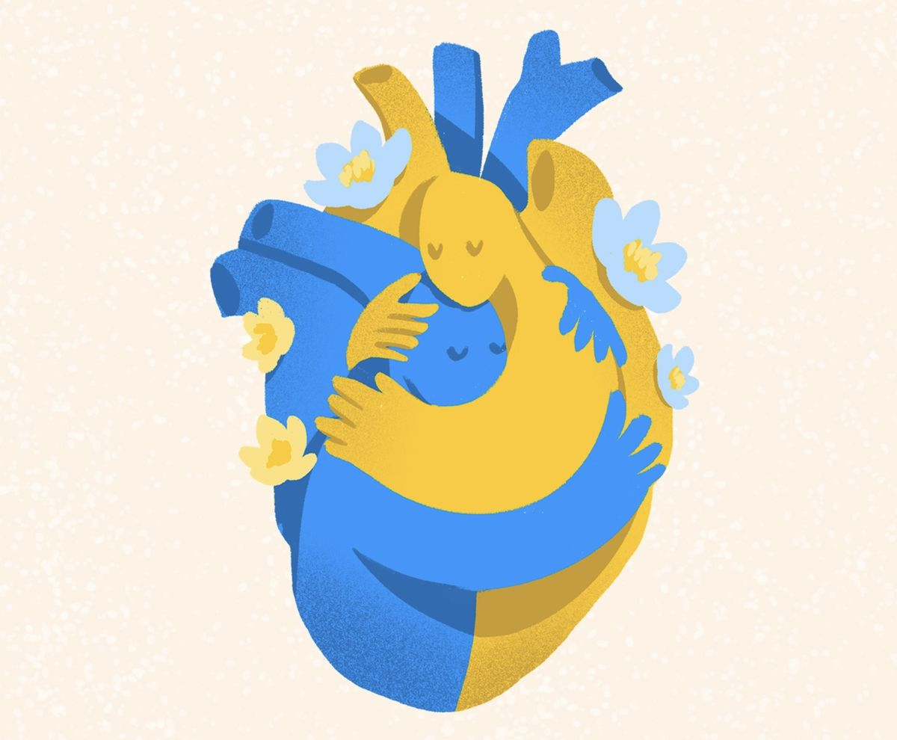
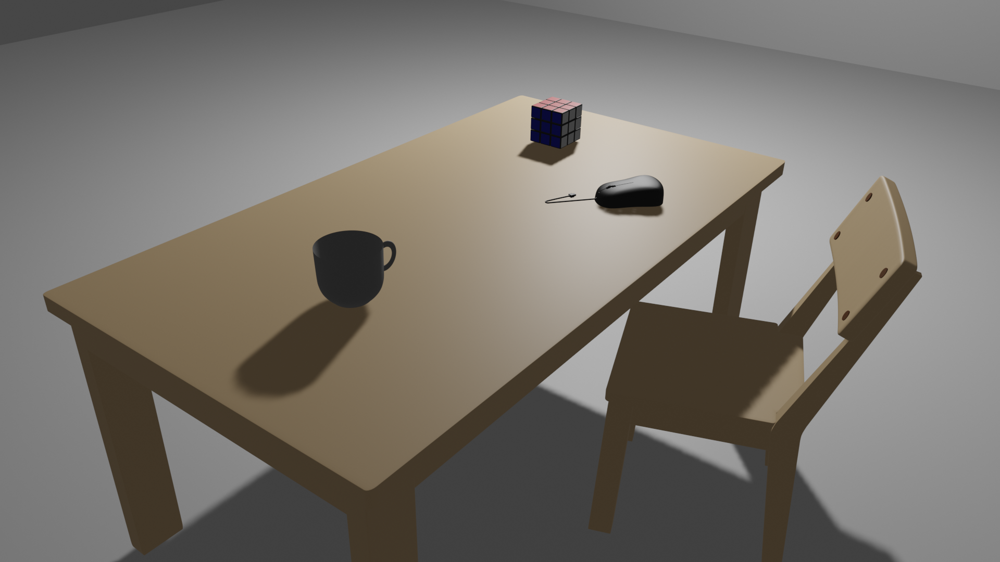
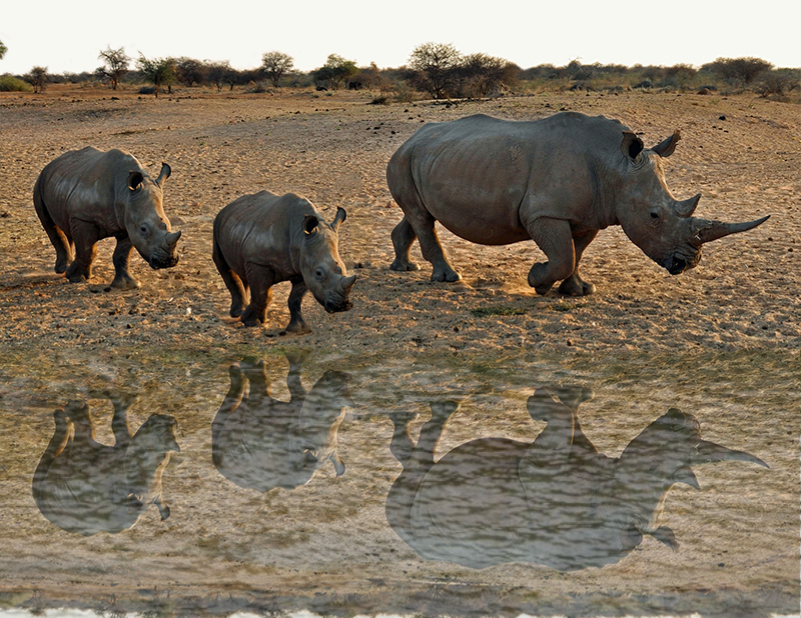
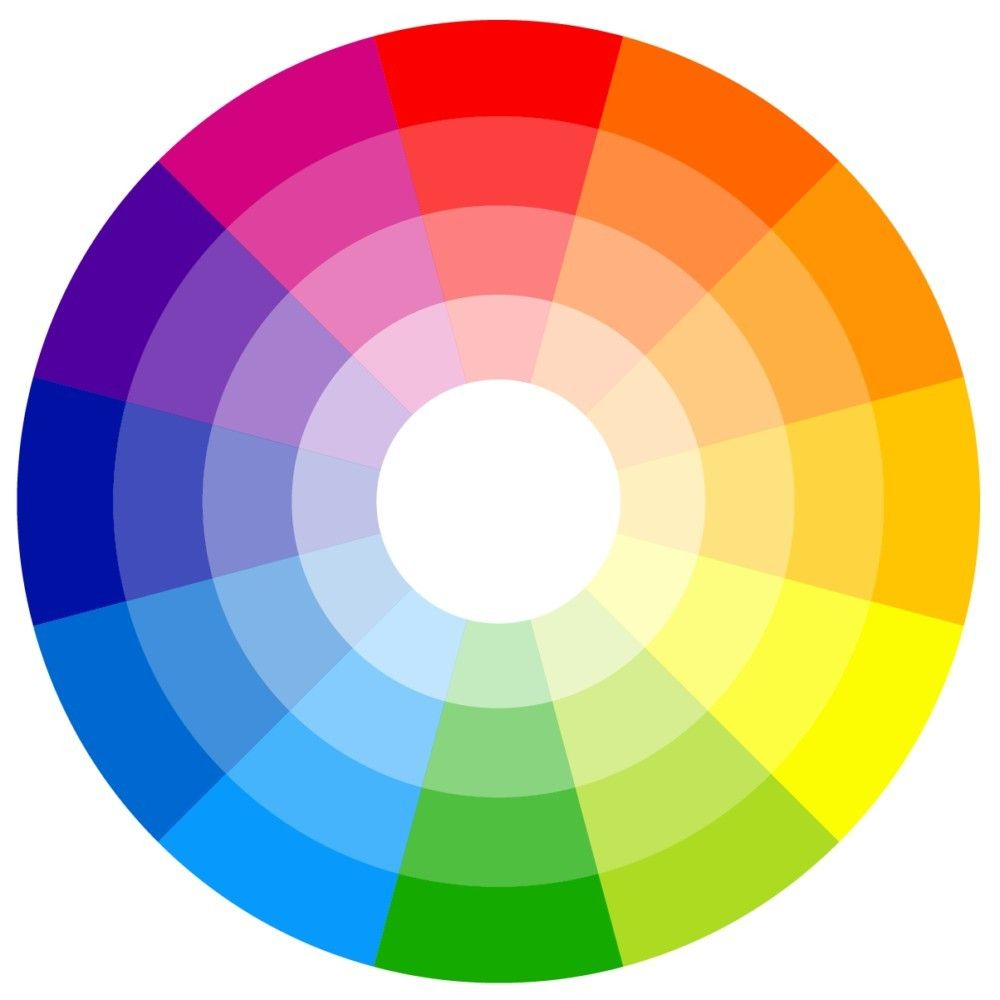
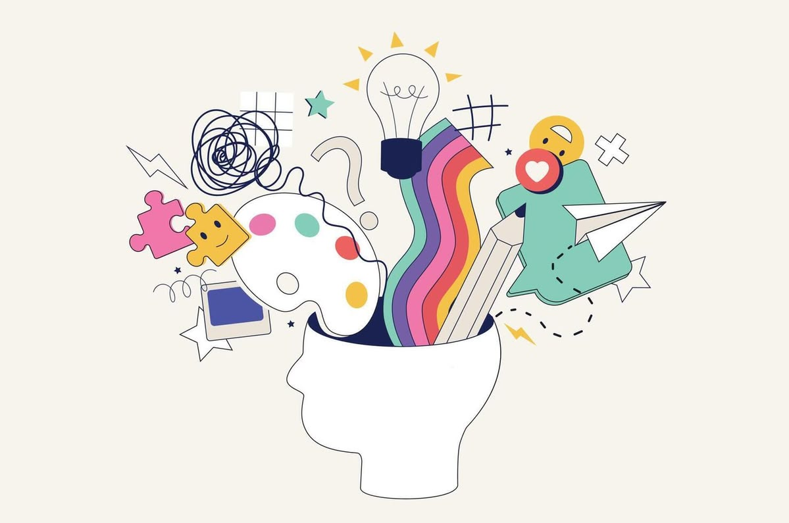

Nayeli Guerrero
Diseñadora y creadora digital en modelado 3D y 2D, edición fotográfica y diseño visual. Transformo ideas en experiencias visuales únicas.
Diseñadora y creadora digital en modelado 3D y 2D, edición fotográfica y diseño visual. Transformo ideas en experiencias visuales únicas.
Soy Nayeli Guadalupe Guerrero Tapia, tengo 19 años y estudio en la carrera de Entornos Virtuales y Negocios Digitales, me gusta el diseño y la creación del diseño digital como también la funcionalidad del modelado 2D y 3D. Mi objetivo es seguir aprendiendo, experimentando con nuevas tecnologías y aportar soluciones creativas e innovadoras en cada proyecto en el que participo.
Pongo atención en los pequeños detalles para que cada proyecto luzca limpio, ordenado y transmita exactamente lo que se busca.
Me entusiasma descubrir ideas nuevas, experimentar con estilos diferentes y mejorar un poco más con cada trabajo que realizo.
Creo en el diálogo abierto para entender bien lo que cada proyecto necesita, aportar creatividad y lograr resultados de los que todos estemos orgullosos.

La forma en la que disfruto crear y dar vida a cada idea.


Más allá de las herramientas que usemos, un buen diseño necesita orden y armonía para que la idea se entienda bien. Saber acomodar cada elemento visual ayuda a llamar la atención y a despertar emociones en quien lo mira.

Selección de paletas armónicas y contrastes adecuados para generar atmósferas e identidad visual.

Distribución estratégica de los elementos en el espacio mediante reglas de proporción y jerarquía.

Uso de luces, sombras y texturas para dar profundidad y realismo a cualquier pieza gráfica.
CÓMO TRABAJO
Análisis previo y conceptualización de la idea principal del proyecto.
Creación de bocetos, modelado y estructuración técnica en las herramientas adecuadas.
Ajustes finales, pruebas de funcionalidad y entrega de un producto pulido.
